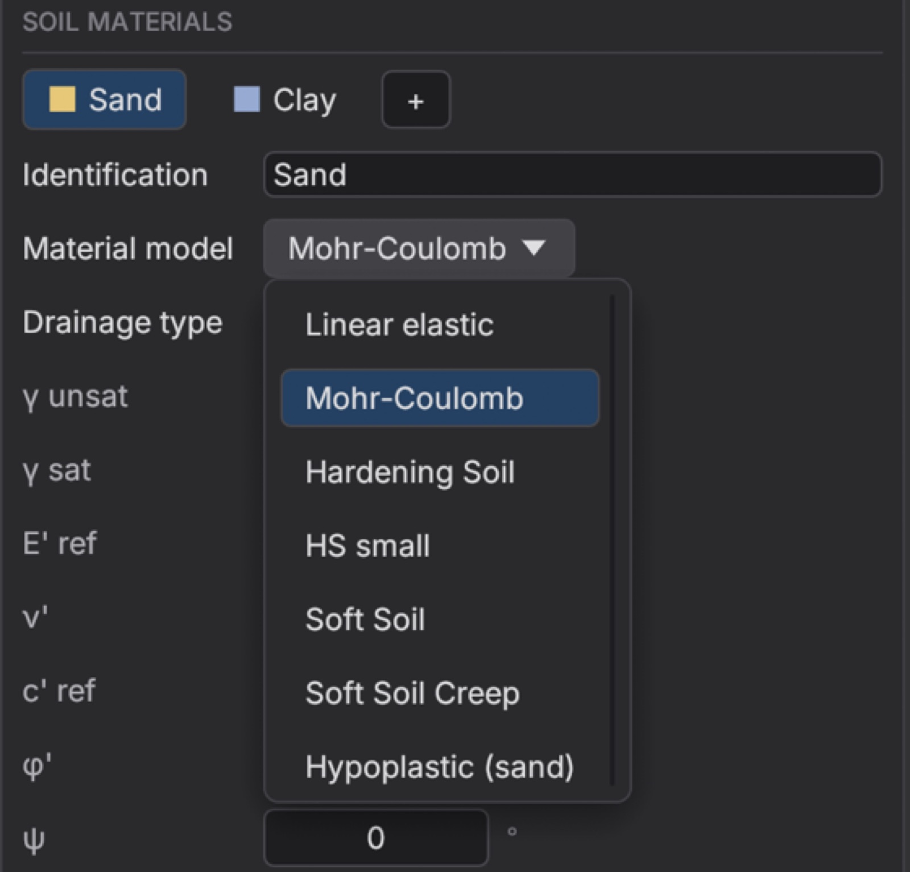
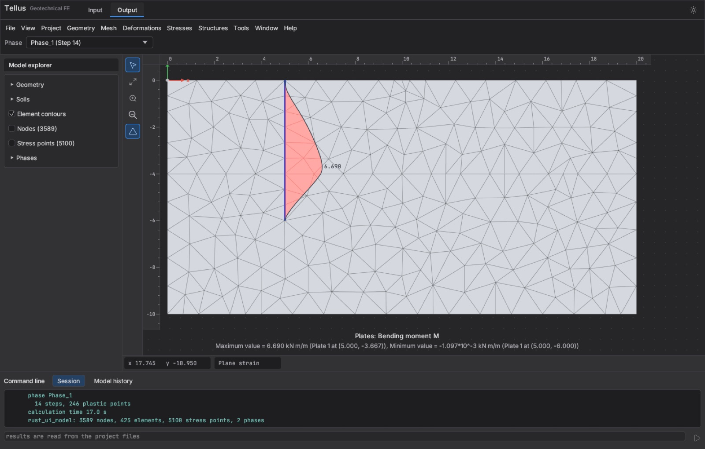
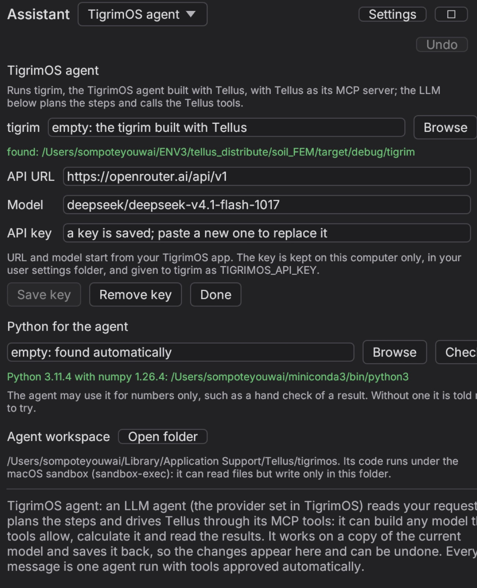
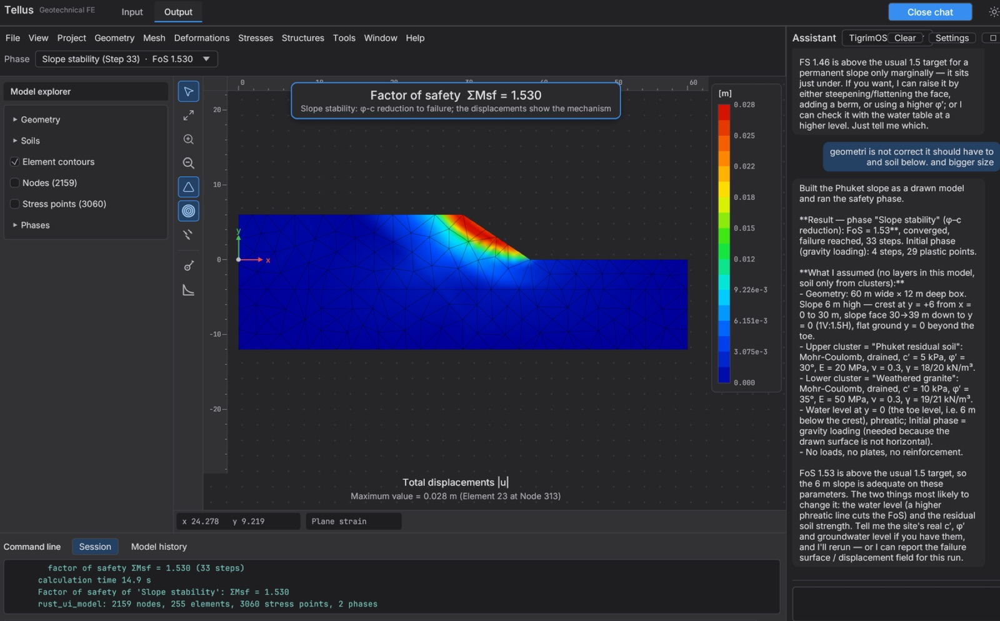

1
Install
Tellus 2D is one desktop program of about 40 MB that runs entirely on your computer. It needs macOS 11 or later (Intel or Apple Silicon) or 64-bit Windows 10 or 11, and 4 GB of memory is enough for ordinary models.
| System | File | How to install |
|---|---|---|
| macOS | macOS .dmg, 40 MB | Open the DMG and drag Tellus into Applications. The first time, right-click Tellus in Applications, choose Open and confirm, because the app is not signed by a registered developer. |
| Windows | Windows .zip, 39 MB | Unzip the folder anywhere, for example C:\Tools\Tellus, and run Tellus.exe. Keep tigrim.exe beside it, because the chat assistant uses it. If SmartScreen appears, choose More info and then Run anyway. |
Note where the program lives, because an AI assistant needs its full path later: /Applications/Tellus.app/Contents/MacOS/tellus on macOS, or the full path of Tellus.exe on Windows.
2
First start: free edition or licence key
The first screen asks for a licence key and also offers the free academic edition, so you choose one of two routes.
- Free academic edition. Click Continue with the free academic edition. Tellus needs no key and no internet, remembers the choice and opens straight into the workspace from then on. The top bar shows Free academic edition, and clicking it lists the limits and takes a key later.
- Licence key. Paste a key of the form
TLS-XXXX-XXXX-XXXX-XXXX-XXXXand click Activate. Activation needs the internet once, after which Tellus runs offline for up to 30 days and re-checks the key about every 7 days. The top bar then shows Licensed to your name.
| Item | Free academic edition | With a licence key |
|---|---|---|
| Mesh | up to 1,000 elements | no limit |
| Phases | the initial phase and 2 more | no limit |
| Soil models | Linear elastic, Mohr-Coulomb, Soft Soil | also Hardening Soil, HS small, Soft Soil Creep, hypoplastic sand |
| Structures | 2 plates, 2 geogrids, 2 struts or anchors, no embedded piles | no limit |
| PLAXIS export | no | yes |
| Reports and plots | "not for commercial use" watermark | no watermark |
A model beyond a limit is still built and saved, but Calculate explains which limit stops it, for example "The mesh has 1,240 elements; the Free academic edition calculates up to 1000". Coarsen the mesh, remove a phase or change the soil model, or ask for a licence key. The free edition is for teaching and learning only, under the academic conditions.
3
The workspace
Tellus has two workspaces, chosen at the top left. Input builds and calculates the model, and Output shows the results, while the Chat assistant button at the top right opens a chat panel beside either of them. The theme button switches between dark and light.
Input follows six steps, each a tab across the top, and you normally work from left to right:
- Soil
- Geometry
- Structures
- Mesh
- Flow conditions
- Staged construction
| Tab | What you set there |
|---|---|
| Soil | Soil materials (model, unit weights, stiffness, strength, drainage, permeability), the boreholes and their layers, and the soil contour. |
| Geometry | Soil clusters drawn with the mouse, for embankments, excavations and irregular ground. |
| Structures | Plates with interfaces, line and point loads, spring supports for struts and anchors, geogrids, embedded piles, fixities and boundary conditions. |
| Mesh | Element size, mesh type (15-node triangles or structured 25-node rectangles) and local refinement, then Generate mesh. |
| Flow conditions | Water levels (phreatic lines) and the drainage of the model sides. |
| Staged construction | The initial phase (K0 procedure or gravity loading) and the phases after it, each Plastic, Consolidation or Safety, with what is active in it, then Calculate. |
Anything in the drawing can be picked with Select to edit its properties, and Undo and Redo work on every edit. Projects are saved as small .tellus files of a few kB, because the results are recalculated rather than stored.

4
Your first model: a strip footing
This example builds a 2 m strip footing on sand over clay and finds its settlement and factor of safety. It fits easily in the free edition, because the default mesh has about 420 elements.
- New project. Click New project... and choose Soil profile. Tellus starts with a 20 × 10 m contour, 4 m of sand over 6 m of clay, a water level at −2 m and a 2 m line load. Choose Draw geometry instead when the soil is not in level layers, such as an embankment.
- Soil. In the Soil tab, open each material and set its model and parameters, for example Mohr-Coulomb sand with γ = 18/20 kN/m³, E = 30 MPa, φ = 32° and clay as Undrained (A) with c, φ or as Soft Soil. Set the layer thicknesses under Boreholes.
- Structures. Check the line load under Loads (value in kN/m/m, negative downwards), and add a plate with Create plate if the footing has stiffness. The boundary conditions default to rollers on the sides and full fixity at the base.
- Mesh. Click Generate mesh. The log reports the number of elements, and in the free edition it notes when a mesh is above 1,000 elements, so make the element size factor larger if needed.
- Flow conditions. Keep the borehole water level, or draw a phreatic line with Draw water level.
- Staged construction. The initial phase sets the stresses by the K0 procedure.
Phase_1switches the load on as a Plastic phase. Click Add phase and set its Calculation type to Safety to find the factor of safety by φ-c reduction. - Calculate. Click Calculate. A window follows each phase and its steps, and when it finishes, View calculation results (the eye button) opens the results in Output.
Make the model wide and deep enough for its boundaries not to affect the result: as a rule, about three times the slope height, excavation depth or embankment width on each side.
5
Reading the results
Output plots any phase as a deformed mesh or as contours of displacement, stress and pore pressure, and hovering the plot reads the value at the nearest node. Plates show axial force, shear force and bending moment diagrams along their length, and the log gives the forces in struts, geogrids and piles.
A Safety phase reports its factor of safety ΣMsf, and its incremental displacements show the failure mechanism. The Curves manager plots displacement or excess pore pressure at chosen points against step, time or ΣMsf: use Select points for curves and click the mesh, for example to plot settlement against time during consolidation.

6
The chat assistant
The chat assistant opens beside the model, so you can describe a problem in English or Thai and watch Tellus build it, for example "a 3 m wide strip footing on 5 m of dense sand over stiff clay carries 150 kPa, the water table is 2 m down; what is the settlement and the factor of safety?". Every change appears in the model on screen as an ordinary edit, so you can check, correct and undo it, and the assistant can write a PDF report with pictures of the results.
It has two engines. Jev is fast and lets Tellus choose from a fixed set of actions, whereas the TigrimOS agent is an LLM agent that plans its own steps with all of Tellus's tools. We recommend the TigrimOS agent with a model from OpenRouter, which gives one API key for many AI models and charges per use.
- Sign up at openrouter.ai, add a few dollars of credit under Settings → Credits, and create a key at openrouter.ai/keys. It starts with
sk-or-v1-. - In Tellus click Chat assistant, choose TigrimOS agent next to Assistant, and click Settings. Leave tigrim empty, because Tellus finds the agent program it ships with.
- Fill in API URL
https://openrouter.ai/api/v1, modeldeepseek/deepseek-v4.1-flash-1017(the model Tellus was tested with) and your key, then click Save key and Done.

The key stays on your computer, and the model's cost is paid to OpenRouter, separately from Tellus. Other OpenAI-compatible providers work when you change the URL and the model, as long as the model supports tool calling. A weaker model makes more mistakes when it builds a model, so check its work as you would a junior engineer's.

7
Connect Claude Code, Claude Desktop or Codex through MCP
An AI assistant outside Tellus can drive it through the Model Context Protocol. The command tellus --mcp starts Tellus without a window as an MCP server, which the assistant launches on your computer and talks to over standard input and output. It gives the assistant 31 tools to build a model, calculate it and read the results, so a request such as "model a 2 m strip footing on 4 m of sand over soft clay, apply 80 kPa, and give me the settlement and the factor of safety" is answered with the solver's numbers.
The server uses the same licence as the program: without a key it has the limits of the free academic edition, and a refused tool says which limit applies. It works on ordinary .tellus files, so a project the assistant saves opens in Tellus for checking. Each assistant needs the full path of the program:
| System | Program path |
|---|---|
| macOS | /Applications/Tellus.app/Contents/MacOS/tellus |
| Windows | the full path of Tellus.exe, e.g. C:\Tools\Tellus\Tellus.exe (written C:\\Tools\\Tellus\\Tellus.exe inside JSON) |
Register Tellus once for your user account. The tools load in the next Claude Code session, where /mcp lists them as tellus.
claude mcp add -s user tellus -- /Applications/Tellus.app/Contents/MacOS/tellus --mcp
claude mcp add -s user tellus -- C:\Tools\Tellus\Tellus.exe --mcp
Check it with claude mcp list, and remove it with claude mcp remove -s user tellus. Use -s project instead to share the server with a project through its .mcp.json.
Open Settings → Developer → Edit Config, which opens claude_desktop_config.json (in ~/Library/Application Support/Claude on macOS, %APPDATA%\Claude on Windows). Add Tellus under mcpServers, save and restart Claude Desktop.
{
"mcpServers": {
"tellus": {
"command": "/Applications/Tellus.app/Contents/MacOS/tellus",
"args": ["--mcp"]
}
}
}The Tellus tools appear under the tools button of a new chat, and Claude asks before it uses each one unless you allow it for the conversation.
The Codex command line, the Codex IDE extension and the ChatGPT desktop app read local MCP servers from ~/.codex/config.toml (%USERPROFILE%\.codex\config.toml on Windows). Add Tellus with one command:
codex mcp add tellus -- /Applications/Tellus.app/Contents/MacOS/tellus --mcp
or write the entry into the file by hand:
[mcp_servers.tellus] command = "/Applications/Tellus.app/Contents/MacOS/tellus" args = ["--mcp"]
codex mcp list shows the server and /mcp lists it inside Codex. ChatGPT in the browser or on the phone cannot start a program on your computer, so use the desktop app or Codex.
Working with a project file
To start with a project loaded, add --open and the file to the arguments, and add --autosave with a file to save the model there after every change, so you can open it in Tellus and see what the assistant built:
claude mcp add -s user tellus -- /Applications/Tellus.app/Contents/MacOS/tellus --mcp --open /path/to/slope.tellus --autosave /path/to/slope.tellus
Without --autosave, ask the assistant to save the project before you open it.
A first request
Once the server is connected, describe the problem in plain words and ask for numbers, for example:
Using the tellus tools, model a 2 m wide strip footing on 4 m of medium dense sand (Mohr-Coulomb, phi 32, E 30 MPa) over 6 m of soft clay (Soft Soil), water table 1 m down. Apply 80 kPa, then run a safety phase. Report the settlement under the footing centre and the factor of safety, and save the project as footing.tellus.
A typical run calls the tools in this order, and you can ask the assistant to show each tool call so you can follow it:
- new_project
- set_soil_layers
- update_soil_material
- add_load
- add_phase
- validate
- calculate
- get_results
- save_project
All 31 tools
new_projectopen_projectsave_projectget_modelset_modelset_contourset_soil_layersadd_soil_materialupdate_soil_materialadd_soil_clusteradd_loadadd_plateadd_phaseupdate_phaseset_initial_phaseadd_water_leveladd_embedded_pileadd_geogridadd_springadd_fixityset_drainageset_boundary_conditionsvalidategenerate_meshcalculateshow_picturewrite_reportget_resultsget_plate_forcesget_curveexport_plaxis_commands
The AI model you use in Claude or Codex is paid for under your own Anthropic or OpenAI account, separately from Tellus. The assistant reports the solver's numbers, but it chooses the geometry and parameters itself, so open the saved project in Tellus and check the model before you use a result. The Windows configurations follow the same format but have not yet been tried on a Windows PC, so tell us if one fails.
8
Command-line options
| Command | What it does |
|---|---|
tellus project.tellus | Opens a project in the window. |
tellus --mcp | Starts the headless MCP server on standard input and output. |
--open FILE, --autosave FILE | With --mcp: start from a project, and save the model after every change. |
tellus --activate KEY | Activates a licence key on this computer, for installing on many computers. |
tellus --licence | Shows the holder, plan and expiry, or says the computer is not activated (free edition). |
tellus --deactivate | Frees this computer's seat so the key can move to another computer. |
On macOS the program is /Applications/Tellus.app/Contents/MacOS/tellus, and on Windows it is Tellus.exe.
9
Troubleshooting
| Problem | What to do |
|---|---|
| macOS says the app cannot be opened | Right-click Tellus in Applications, choose Open and confirm. This is needed once. |
| Calculate refuses with "Free academic edition …" | The model is beyond a free limit. The message names it: coarsen the mesh, remove phases or structures, or change the soil model, or ask for a licence key. |
| The Tellus tools do not appear in Claude or Codex | Check that the program path in the configuration is complete, run it with --licence in a terminal to see that it starts, and start a new session, because MCP tools load when a session starts. |
| "Cannot reach the licence server" | Activation needs the internet once. Connect and try again, or ask IT to allow HTTPS to the licence server. The free edition needs no connection. |
| The assistant built something odd | Ask it to save the project, open the file in Tellus and check the model, then tell the assistant what to correct. |
For anything else, send us a message with the output of tellus --licence and, if you can, the .tellus file.